Section 2.7
Definitions
Stretch or Shrink
Definition 24 (Vertically Stretch or Shrink)
Suppose that \(a>0\). If a point \((x,y)\) lies on the graph of \(y=f(x)\), then the point \((x,ay)\) lies on the graph of \(y=af(x)\).
If \(a>1\), then the graph of \(y=af(x)\) is a vertical stretching of the graph of \(y=f(x)\).
If \(0<a<1\), then the graph of \(y=af(x)\) is a vertical shrinking of the grapph of \(y=f(x)\).
Definition 25 (Horizontal Stretch or Shrink)
Suppose that \(a>0\). If a point \((x,y)\) lines on teh graph \(y=f(x)\), then the point \((\frac{x}{a},y)\) lies on the graph of \(y=f(ax)\).
If \(0<a<1\), then the graph of \(y=f(ax)\) is a horizontal stretching of the graph of \(y=f(x)\).
If \(a>1\), then the graph of \(y=f(ax)\) is a horizontal shrinking of the graph of \(y=f(x)\).
Reflecting
Definition 26 (Reflecting across an Axis)
The graph of \(y=-f(x)\) is the same as the graph of \(y=f(x)\) reflected across the \(x\)-axis.
The graph of \(y=f(-x)\) is the same as the graph of \(y=f(x)\) reflected across the \(y\)-axis.
The graph of \(y=-f(-x)\) is the same as the graph of \(y=f(x)\) reflected across the line \(y=x\).
Definition 27 (Symmetry)
The graph of an equation is symmetric with respect to the \(y\)-axis if the replacement of \(x\) with \(-x\) results in an equivalent equation.
The graph of an equation is symmetric with respect to the \(x\)-axis if the replacement of \(y\) with \(-y\) results in an equivalent equation.
The graph of an equation is symmetric with respect to the origin if the replacement of both \(x\) with \(-x\) and \(y\) with \(-y\) at the same time results in an equivalent equation.
Definition 28 (Odd or Even)
A function \(f\) is an even function if \(f(-x)=f(x)\) for all \(x\) in the domain of \(f\).
A function \(f\) is an odd function if \(f(-x)=-f(x)\) for all \(x\) in the domain of \(f\).
Vertical or Horizontal Translations
Definition 29 (Vertical Translations)
Given a function \(g\) defined by \(g(x)=f(x)+k\), where \(k\) is any real number:
For every point \((x,y)\) on \(f\), there will be a point \((x,y+k)\) on the graph of \(g\).
The graph of \(g\) will be the same as the graph of \(f\), but translated up \(k\) units if \(k>0\) or down \(|k|\) units if \(k<0\).
Definition 30 (Horizontal Translations)
Given a function \(g\) defined by \(g(x)=f(x-h)\), where \(h\) is any real number:
For every point \((x,y)\) on \(f\), there will be a point \((x+h,y)\) on the graph of \(g\).
The graph of \(g\) will be the same as the graph of \(f\), but translated right \(h\) units if \(h>0\) or right \(|h|\) units if \(h<0\).
Examples
Example 33
Draw the graph for \(f(x)=\frac{1}{2}(x-1)^2+2\).
Solution:
The graph we translate is \(y=x^2\).
The graph will be shrink vertically by a factor of \(\frac{1}{2}\).
The graph will be translated \(1\) unit to the right.
The graph will be translated \(2\) units upward.
step-by-step:
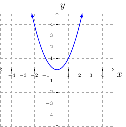
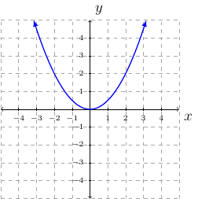
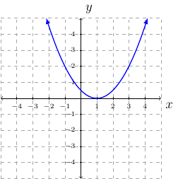
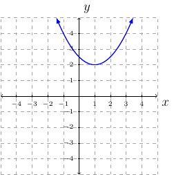
Example 34
Draw the graph of \(f(x)=-2\sqrt{x+1}-1\).
Solution:
The graph we translate is \(y=\sqrt{x}\).
The graph will be stretched vertically by a factor of \(2\).
The graph will be reflected across the \(x\)-axis.
The graph will be translated \(1\) unit to the left.
The graph will be translated \(1\) units downward.
step-by-step:
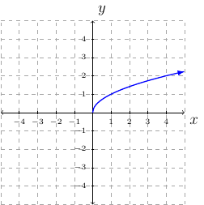
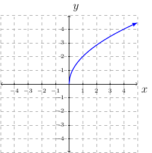
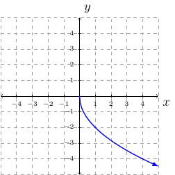
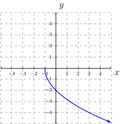
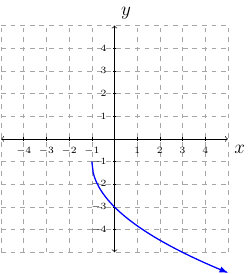
Example 35
Draw the graph of \(f(x)=\sqrt{-2x}+1\).
Solution:
The graph we translate is \(y=\sqrt{x}\).
The graph will shrink horizontally by a factor of \(\frac{1}{2}\).
The graph will be reflected across the \(y\)-axis.
The graph will have no translation left or right.
The graph will translate 1 unit upward.
step-by-step
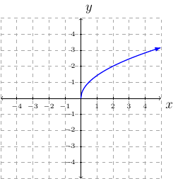
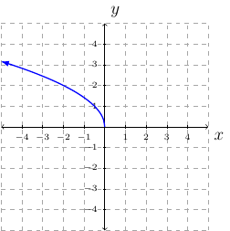
skip
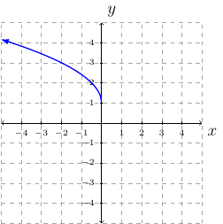